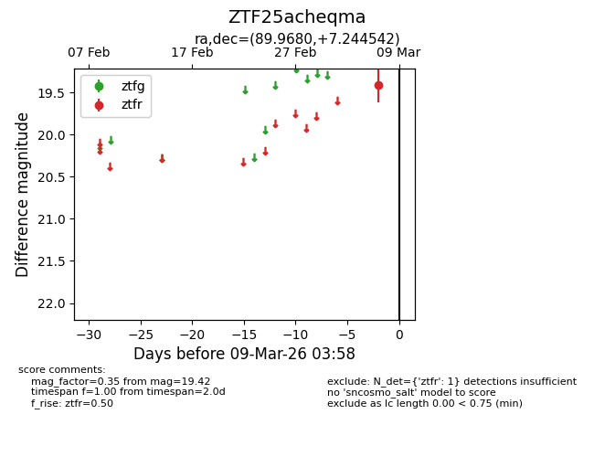
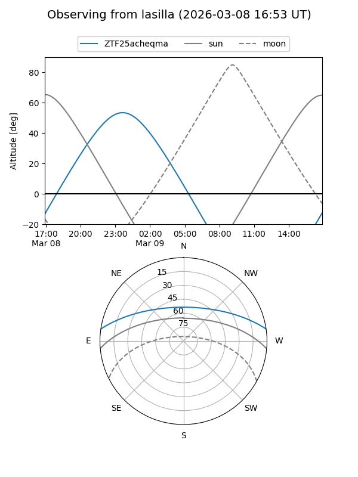
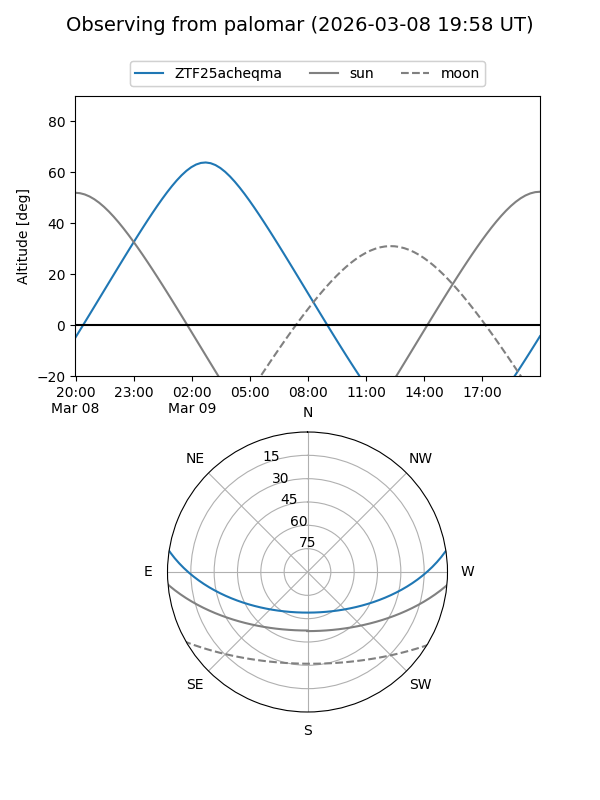

ZTF25acheqma
Target ZTF25acheqma at 2026-03-09 03:59
Aliases and brokers:
FINK: link
Lasair: link
ALeRCE: link
alt names
ZTF25acheqma (ztf,fink_ztf)
Coordinates:
equatorial (ra, dec) = 89.9680,+7.24454
equatorial (HMS+DMS) = 05:59:52.31,+07:14:40.35
galactic (l, b) = (200.5014,-8.01745)
Flags:
Photometry:
last ztfr=19.42
1 ztfr detections
Lightcurve

Visibility


Additional plots